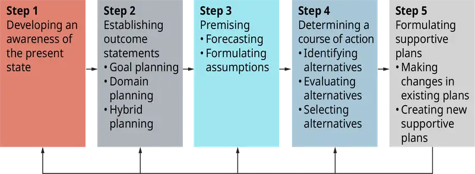
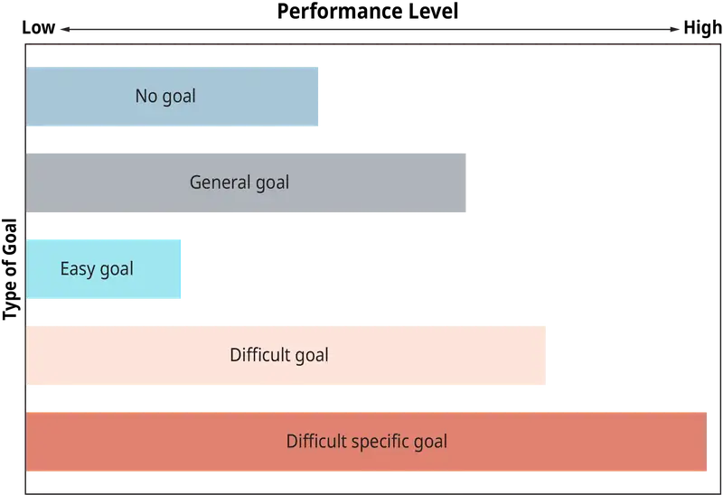
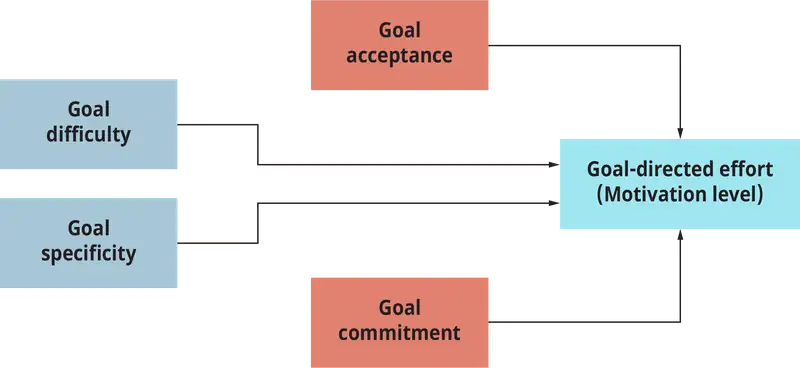
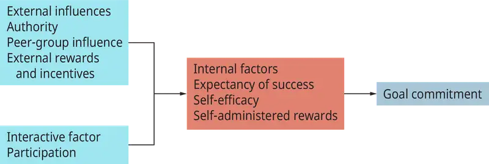
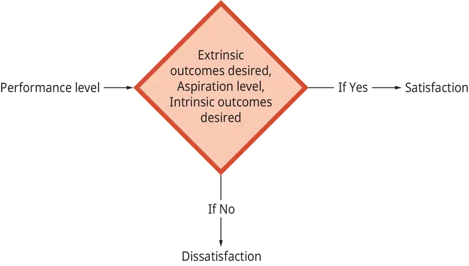
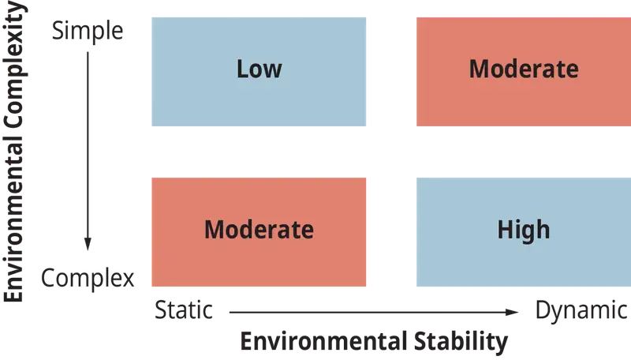
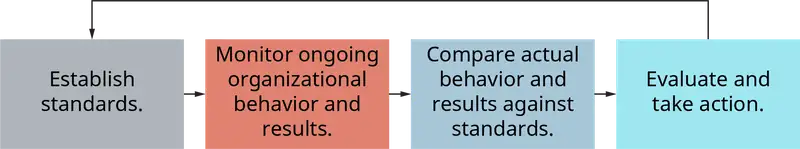
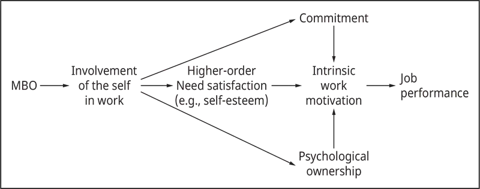
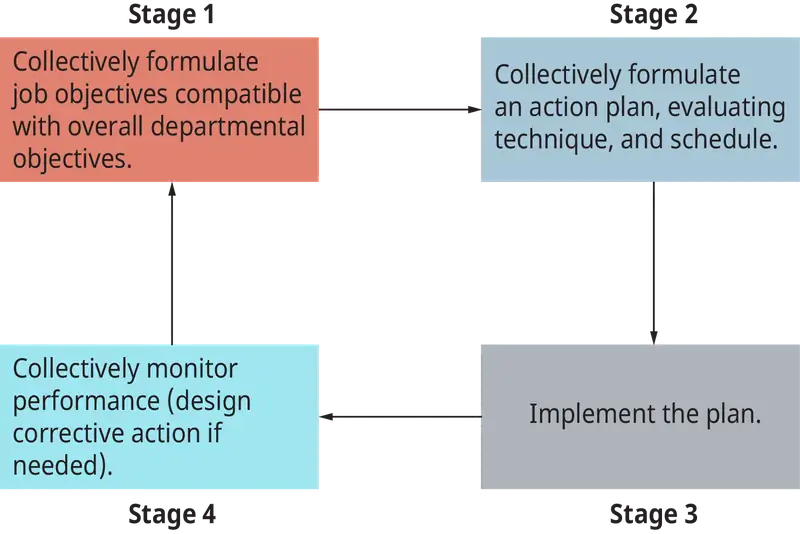

Chapter 17: Organizational Planning and Controlling¶
Introduction¶
Learning Outcomes
After reading this chapter, you should be able to answer these questions:
- Understand the importance of planning and why organizations need to plan and control.
- Outline the planning and controlling processes.
- Identify different types of plans and control systems employed by organizations.
- Explain the individual and organizational effects associated with goal setting and planning.
- Understand how planning occurs in today’s organizations.
- Discuss the impact that control has on organizational members.
- Describe management by objectives as a philosophy and as a management tool/technique; describe its effects.
- Differentiate between the execution of the planning and controlling activities under control- and involvement-oriented management practices.
Exploring Managerial Careers: Elizabeth Charbonnier: ChezPastis.com
ChezPastis.com, the brainchild of Elisabeth Charbonnier, specializes in selling French and other gourmet foods online. Before starting ChezPastis.com, Elisabeth and her partners were professional chefs, and their goal for their company is to make gourmet products available to the world. ChezPastis.com began with a bang, and before long Elisabeth and her partners were too busy to plan for the future and were just trying to survive. After six months, ChezPastis.com experienced growing pains similar to other Internet start-ups.
One of the partners, Zack Fortuna, was online one day trying to order some books for his daughter’s birthday. The message he got after attempting to place his order was frustrating: “Sorry! The items you have requested are currently on back order and will not be available for two months.” Zack needed the books in two weeks, not two months. He decided to drive to the bookstore and buy books that were in stock rather than waste time online searching for items that might not be in stock. Suddenly, Zack realized that ChezPastis.com frequently runs out of items as well and this delays customer orders. Perhaps ChezPastis.com’s growing pains have something to do with their supply problems.
Question: Are ChezPastis.com’s inventory problem attributable to poor planning, poor control, or both? How can Elisabeth, Zack, and the other partners improve the situation?
“If you are good enough, it isn’t necessary to set aside time for formal planning. After all, ‘planning time’ takes away from ‘doing time.’” Managers often make such statements, possibly as a way of rationalizing their lack of a formal planning program. These claims are simply not valid—planning does influence the effectiveness of the entire organization.
Some years ago, the Calico Candy Company developed and produced a highly successful saltwater taffy Santa Claus. Buoyed by this success, the company planned and manufactured a saltwater taffy Easter Bunny and produced the Santa at Christmas again. This time, however, Calico got stuck with its taffy through faulty planning. Market research clearly showed that consumer preferences had shifted from taffy to chocolate. Rather than plan its products to meet this new preference, the company stayed with what had worked in the past and lost a “ton of money.” Yes, planning is important.
Outcome: Zack comes to work the next day excited about his insight. The partners know that inventory has been an ongoing trouble spot but hadn’t realized the effect it could be having on potential customers who get frustrated with delayed orders and go elsewhere. After collecting data on customer requests and back orders, the partners discover that they fill customer orders immediately only 50 percent of the time! Jolted by this thunderbolt, the partners decide to hold regular strategic planning meetings where they will view the big picture and plan for the future. The first things they decide to do are install better control systems over their inventory process and collect data on customer online experiences with ChezPastis.com.
Elisabeth proposes setting a goal of never having to tell a customer that requested items are on back order. Zack agrees that this is an admirable goal; however, he thinks they should set a daring but reachable goal of immediately filling customer orders 80 percent of the time. After all, they are a small business in an unpredictable environment, and they don’t want to frustrate employees with a potentially impossible goal.
The essence of planning is to see opportunities and threats in the future and, respectively, exploit or combat them as the case may be. . . . Planning is a philosophy, not so much in the literal sense of that word but as an attitude, a way of life.
17.1 Is Planning Important¶
- Understand the importance of planning and why organizations need to plan and control.
Planning is the process by which managers establish goals and specify how these goals are to be attained. Plans have two basic components: outcome or goal statements and action statements. Outcome or goal statements represent the end state—the targets and outcomes managers hope to attain. Action statements reflect the means by which organizations move forward to attain their goals. British prime minister Theresa May is determined to change the way that public companies’ boards are comprised by advocating that employees be part of every board. As a part of her action statement, she advocated putting an employee representative in every boardroom, just like Mick Barker, a railway worker since the 1970s, has been quietly helping to shape decision-making as a member of the board of directors at the top of transport giant First Group.
Planning is an intellectual activity. It is difficult to see managers plan, because most of this activity unfolds in the mind of those doing the planning. While planning, managers have to think about what has to be done, who is going to do it, and how and when they will do it. Planners think both retrospectively (about past events) and prospectively (about future opportunities and impending threats). Planning involves thinking about organizational strengths and weaknesses, as well as making decisions about desired states and ways to achieve them.
Planning for organizational events, whether in the internal or external environment, should be an ongoing process—part of a manager’s daily, weekly, and monthly duties and a routine task for all members of high-involvement organizations. Plans should be continually monitored. Managers and other organizational members should check to see if their plans need to be modified to accommodate changing conditions, new information, or new situations that will affect the organization’s future. Plans need to be administered with flexibility, as organizations learn about new and changing conditions. Clearly, the Calico Candy Company failed to monitor its plans in this way. By thinking of planning as a continuous activity, methods can be formulated for handling emerging and unforeseen opportunities and threats. Planning is one process through which organizational activity can be given meaning and direction.
Why Should Managers Plan?¶
Managers have several reasons for formulating plans for themselves, their employees, and various organizational units: (1) to offset uncertainty and change; (2) to focus organizational activity on a set of objectives; (3) to provide a coordinated, systematic road map for future activities; (4) to increase economic efficiency; and (5) to facilitate control by establishing a standard for later activity.
Several forces contribute to the necessity for organizational planning. First, in the internal environment, as organizations become larger and more complex, the task of managing becomes increasingly complex. Planning maps out future activities in relation to other activities in the organization. Second, as the external environment becomes increasingly complex and turbulent, the amount of uncertainty faced by a manager increases. Planning enables organizations to approach their environment systematically.
A study out of Cornell University and Indiana University found that absenteeism cost companies $40 billion per year; the absence of planning was one of the biggest problems businesses face. Firms that follow a clearly defined plan in their day-to-day operations will be more successful than those that do not. The authors state, “organizational controlled consequences that would tend to deter absenteeism.” Interestingly, this may be as simple as inspecting the organizational policies that provide the “rules” for employee absenteeism.
Do Managers Really Plan?¶
Managers should plan formally, but do they? Some observers contend that managers typically are too busy to engage in a regular form of systematic planning. McGill University management professor Henry Mintzberg notes:
When managers plan, they do so implicitly in the context of daily actions, not in some abstract process reserved for two weeks in the organization’s mountain retreat. The plans of the chief executives I have studied seemed to exist only in their heads—as flexible, but often specific, intentions. . . . The job of managing does not breed reflective planners; the manager is a real-time responder to stimuli.
Others disagree. After reviewing a number of studies focused on the degree to which planning and other managerial activities are inherent parts of managing, management professors J. Carroll and J. Gillen state that “the classical management functions of Fayol, Urwick, and others are not folklore as claimed by some contemporary management writers but represent valid abstractions of what managers actually do and what managers should do.” Barbara Allen, president of Sunbelt Research Associates, notes that she did a considerable amount of planning before launching her new business. Now that she is operating successfully, she reviews and updates her plans periodically.
Managers often are very busy people. Some act without a systematic plan of action; however, many managers do plan systematically. For example, many managers develop systematic plans for how their organization will react to a crisis. United Airlines, for example, created a crisis planning group. The group developed United’s crisis contingency plan book, which specifies what the airline’s crisis management team should do in the event of a crisis. Keri Calagna, principal, Deloitte Risk and Financial Advisory, Deloitte & Touche LLP, comments that up to 20.7% of a firm’s value resides in reputation but that CEOs and 77% of board of directors members identified reputation risk as the area about which they felt most vulnerable and that only 39% had a plan to address it.
The question about whether managers really plan and the observation that many times they are simply too busy to retreat to the mountaintop and reflect on where the organization should be going and how it should get there miss the point: there are different types of planning.
Concept Check
What is the process where managers establish goals and outline how these goals will be met called?.
How do the internal and external environments of the organization and its strengths and weaknesses impact the planning process?
Why should managers plan?
17.2 The Planning Process¶
- Outline the planning and controlling processes.
Planning is a process. Ideally it is future oriented, comprehensive, systematic, integrated, and negotiated. It involves an extensive search for alternatives and analyzes relevant information, is systematic in nature, and is commonly participative. The planning model described in this section breaks the managerial function of planning into several steps, as shown in Figure 17.3. Following this step-by-step procedure helps ensure that organizational planning meets these requirements.

Step 1: Developing an Awareness of the Present State¶
According to management scholars Harold Koontz and Cyril O’Donnell, the first step in the planning process is awareness. It is at this step that managers build the foundation on which they will develop their plans. This foundation specifies an organization’s current status, pinpoints its commitments, recognizes its strengths and weaknesses, and sets forth a vision of the future. Because the past is instrumental in determining where an organization expects to go in the future, managers at this point must understand their organization and its history. It has been said—“The further you look back, the further you can see ahead.”
Step 2: Establishing Outcome Statements¶
The second step in the planning process consists of deciding “where the organization is headed, or is going to end up.” Ideally, this involves establishing goals. Just as your goal in this course might be to get a certain grade, managers at various levels in an organization’s hierarchy set goals. For example, plans established by a university’s marketing department curriculum committee must fit with and support the plans of the department, which contribute to the goals of the business school, whose plans must, in turn, support the goals of the university. Managers therefore develop an elaborate network of organizational plans, such as that shown in Figure 17.4, to achieve the overall goals of their organization.
Goal vs. Domain Planning¶
Outcome statements can be constructed around specific goals or framed in terms of moving in a particular direction toward a viable set of outcomes. In goal planning, people set specific goals and then create action statements. For example, freshman Kristin Rude decides that she wants a bachelor of science degree in biochemistry (the goal). She then constructs a four-year academic plan that will help her achieve this goal. Kristin is engaging in goal planning. She first identifies a goal and then develops a course of action to realize her goal.
Another approach to planning is domain/directional planning, in which managers develop a course of action that moves an organization toward one identified domain (and therefore away from other domains). Within the chosen domain may lie a number of acceptable and specific goals. For example, high-school senior Neil Marquardt decides that he wants to major in a business-related discipline in college. During the next four years, he will select a variety of courses from the business school curriculum yet never select a major. After selecting courses based on availability and interest, he earns a sufficient number of credits within this chosen domain that enables him to graduate with a major in marketing. Neil never engaged in goal planning, but in the end he will realize one of many acceptable goals within an accepted domain.
The development of the Post-it® product by the 3M Corporation demonstrates how domain planning works. In the research laboratories at 3M, efforts were being made to develop new forms and strengths of cohesive substances. One result was cohesive material with no known value because of its extremely low cohesive level. A 3M division specialist, Arthur L. Fry, frustrated by page markers falling from his hymn book in church, realized that this material, recently developed by Spencer F. Silver, would stick to paper for long periods and could be removed without destroying the paper. Fry experimented with the material as page markers and note pads—out of this came the highly popular and extremely profitable 3M product Scotch Post-it®. Geoff Nicholson, the driving force behind the Post-it® product, comments that rather than get bogged down in the planning process, innovations must be fast-tracked and decisions made whether to continue or move on early during the product development process.
Situations in which managers are likely to engage in domain planning include (1) when there is a recognized need for flexibility, (2) when people cannot agree on goals, (3) when an organization’s external environment is unstable and highly uncertain, and (4) when an organization is starting up or is in a transitional period. In addition, domain planning is likely to prevail at upper levels in an organization, where managers are responsible for dealing with the external environment and when task uncertainty is high. Goal planning (formulating goals compatible with the chosen domain) is likely to prevail in the technical core, where there is less uncertainty.
Hybrid Planning¶
Occasionally, coupling of domain and goal planning occurs, creating a third approach, called hybrid planning. In this approach, managers begin with the more general domain planning and commit to moving in a particular direction. As time passes, learning occurs, uncertainty is reduced, preferences sharpen, and managers are able to make the transition to goal planning as they identify increasingly specific targets in the selected domain. Movement from domain planning to goal planning occurs as knowledge accumulates, preferences for a particular goal emerge, and action statements are created.
Consequences of Goal, Domain, and Hybrid Planning¶
Setting goals not only affects performance directly, but also encourages managers to plan more extensively. That is, once goals are set, people are more likely to think systematically about how they should proceed to realize the goals. When people have vague goals, as in domain planning, they find it difficult to draw up detailed action plans and are therefore less likely to perform effectively. When studying the topic of motivation, you will learn about goal theory. Research suggests that goal planning results in higher levels of performance than does domain planning alone.
Step 3: Premising¶
In this step of the planning process, managers establish the premises, or assumptions, on which they will build their action statements. The quality and success of any plan depends on the quality of its underlying assumptions. Throughout the planning process, assumptions about future events must be brought to the surface, monitored, and updated.
Managers collect information by scanning their organization’s internal and external environments. They use this information to make assumptions about the likelihood of future events. As Kristin considers her four-year pursuit of her biochemistry major, she anticipates that in addition to her savings and funds supplied by her parents, she will need a full-time summer job for two summers in order to cover the cost of her undergraduate education. Thus, she includes finding full-time summer employment between her senior year of high school and her freshman year and between her freshman and sophomore years of college as part of her plan. The other two summers she will devote to an internship and finding postgraduate employment—much to mom and dad’s delight! Effective planning skills can be used throughout your life. The plan you develop to pay for and complete your education is an especially important one.
Step 4: Determining a Course of Action (Action Statements)¶
In this stage of the planning process, managers decide how to move from their current position toward their goal (or toward their domain). They develop an action statement that details what needs to be done, when, how, and by whom. The course of action determines how an organization will get from its current position to its desired future position. Choosing a course of action involves determining alternatives by drawing on research, experimentation, and experience; evaluating alternatives in light of how well each would help the organization reach its goals or approach its desired domain; and selecting a course of action after identifying and carefully considering the merits of each alternative.
Step 5: Formulating Supportive Plans¶
The planning process seldom stops with the adoption of a general plan. Managers often need to develop one or more supportive or derivative plans to bolster and explain their basic plan. Suppose an organization decides to switch from a 5-day, 40-hour workweek (5/40) to a 4-day, 40-hour workweek (4/40) in an attempt to reduce employee turnover. This major plan requires the creation of a number of supportive plans. Managers might need to develop personnel policies dealing with payment of daily overtime. New administrative plans will be needed for scheduling meetings, handling phone calls, and dealing with customers and suppliers.
Planning, Implementation, and Controlling¶
After managers have moved through the five steps of the planning process and have drawn up and implemented specific plans, they must monitor and maintain their plans. Through the controlling function (to be discussed in greater detail later in this chapter), managers observe ongoing human behavior and organizational activity, compare it to the outcome and action statements formulated during the planning process, and take corrective action if they observe unexpected and unwanted deviations. Thus, planning and controlling activities are closely interrelated (planning ➨ controlling ➨ planning . . .). Planning feeds controlling by establishing the standards against which behavior will be evaluated during the controlling process. Monitoring organizational behavior (the control activity) provides managers with input that helps them prepare for the upcoming planning period—it adds meaning to the awareness step of the planning process.
Influenced by total quality management (TQM) and the importance of achieving continuous improvement in the processes used, as well as the goods and services produced, organizations such as IBM-Rochester have linked their planning and controlling activities by adopting the Deming cycle (also known as the Shewhart cycle).
It has been noted on numerous occasions that many organizations that do plan fail to recognize the importance of continuous learning. Their plans are either placed on the shelf and collect dust or are created, implemented, and adhered to without a systematic review and modification process. Frequently, plans are implemented without first measuring where the organization currently stands so that future comparisons and evaluations of the plan’s effectiveness cannot be determined. The Deming cycle, shown in Figure 17.6, helps managers assess the effects of planned action by integrating organizational learning into the planning process. The cycle consists of four key stages: (1) Plan—create the plan using the model discussed earlier. (2) Do—implement the plan. (3) Check—monitor the results of the planned course of action; organizational learning about the effectiveness of the plan occurs at this stage. (4) Act—act on what was learned, modify the plan, and return to the first stage in the cycle, and the cycle begins again as the organization strives for continuous learning and improvement.
Concept Check
What are the five steps in the planning process?
What is the difference between goal, domain, and hybrid planning?
How are planning, implementation, and controlling related?
17.3 Types of Plans¶
- Identify different types of plans and control systems employed by organizations.
From an activity perspective, organizations are relatively complex systems, as they are involved in numerous activities. Many of these activities require management’s attention from both a planning and controlling perspective. Managers therefore create different types of plans to guide operations and to monitor and control organizational activities. In this section, we introduce several commonly used plans. The major categories are hierarchical, frequency-of-use (repetitiveness), time-frame, organizational scope, and contingency. Table 17.1 provides a closer look at many types of plans that fall in each of these categories.
Hierarchical Plans¶
Organizations can be viewed as a three-layer cake, with its three levels of organizational needs. Each of the three levels—institutional, administrative, and technical core—is associated with a particular type of plan. As revealed in Table 17.1, the three types of hierarchical plans are strategic, administrative, and operating (technical core). The three hierarchical plans are interdependent, as they support the fulfillment of the three organizational needs. In the organization’s hierarchy, the technical core plans day-to-day operations.
Table 17.1 (Attribution: Copyright Rice University, OpenStax, under CC-BY 4.0 license)
| Organizational Plans |
|---|
| Hierarchical Plans |
| • Strategic plans (institutional)—define the organization’s long-term vision; articulate the organization’s mission and value statements; define what business the organization is in or hopes to be in; articulate how the organization will integrate itself into its general and task environments. • Administrative plans—specify the allocation of organizational resources to internal units of the organization; address the integration of the institutional level of the organization (for example, vision formulation) with the technical core (vision implementation); address the integration of the diverse units of the organization. • Operating plans (technical core)—cover the day-to-day operations of the organization. |
| Frequency-of-Use Plans |
| Standing Plans |
| • Policies—general statements of understanding or intent; guide decision-making, permitting the exercise of some discretion; guide behavior (for example, no employee shall accept favors and/or entertainment from an outside organization that are substantial enough in value to cause undue influence over one’s decisions on behalf of the organization). • Rules—guides to action that do not permit discretion in interpretation; specify what is permissible and what is not permissible. • Procedures—like rules, they guide action; specify a series of steps that must be taken in the performance of a particular task. |
| Single-Use Plans |
| • Programs—a complex set of policies, rules, and procedures necessary to carry out a course of action. • Projects—specific action plans often created to complete various aspects of a program. • Budgets—plans expressed in numerical terms. |
| Time-Frame Plans |
| • Short-, medium-, and long-range plans—differ in the distance into the future projected: Short-range—several hours to a year; Medium-range—one to five years; Long-range—more than five years |
| Organizational Scope Plans |
| • Business/divisional-level plans—focus on one of the organization’s businesses (or divisions) and its competitive position. • Unit/functional-level plans—focus on the day-to-day operations of lower-level organization units; marketing, human resources, accounting, and operations plans (production). • Tactical plans—division-level or unit-level plans designed to help an organization accomplish its strategic plans. |
| Contingency Plans |
| • Plans created to deal with events that might come to confront the organization (e.g., natural disasters, terrorist threats); alternative courses of action that are to be implemented if events disrupt a planned course of action. |
Strategic Plans¶
Strategic management is that part of the management process concerned with the overall integration of an organization’s internal divisions while simultaneously integrating the organization with its external environment. Strategic management formulates and implements tactics that try to match an organization as closely as possible to its task environment for the purpose of meeting its objectives.
Strategic plans address the organization’s institutional-level needs. Strategic plans outline a long-term vision for the organization. They specify the organization’s reason for being, its strategic objectives, and its operational strategies—the action statements that specify how the organization’s strategic goals are to be achieved.
Part of strategic planning involves creating the organization’s mission, a statement that specifies an organization’s reason for being and answers the question “What business(es) should we undertake?” The mission and the strategic plan are major guiding documents for activities that the organization pursues. Strategic plans have several defining characteristics: They are long-term and position an organization within its task environment; they are pervasive and cover many organizational activities; they integrate, guide, and control activities for the immediate and the long term; and they establish boundaries for managerial decision-making.
Operating plans provide direction and action statements for activities in the organization’s technical core. Administrative plans work to integrate institutional-level plans with the operating plans and tie together all of the plans created for the organization’s technical core.
Frequency-of-Use Plans¶
Another category of plans is frequency-of-use plans. Some plans are used repeatedly; others are used for a single purpose. Standing plans, such as rules, policies, and procedures, are designed to cover issues that managers face repeatedly. For example, managers may be concerned about tardiness, a problem that may occur often in the entire work force. These managers might decide to develop a standing policy to be implemented automatically each time an employee is late for work. The procedure invoked under such a standing plan is called a standard operating procedure (SOP).
Single-use plans are developed for unique situations or problems and are usually replaced after one use. Managers generally use three types of single-use plans: programs, projects, and budgets. See Table 17.1 for a brief description of standing and single-use plans.
Time-Frame Plans¶
The organization’s need to address the future is captured by its time-frame plans. This need to address the future through planning is reflected in short-, medium-, and long-range plans. Given the uniqueness of industries and the different time orientations of societies—study Hofstede’s differentiation of cultures around the world in terms of their orientation toward the future—the times captured by short, medium, and long range vary tremendously across organizations of the world. Konosuke Matsushita’s 250-year plan, which he developed for the company that bears his name, is not exactly typical of the long-range plans of U.S. companies!
Short-, medium-, and long-range plans differ in more ways than the time they cover. Typically, the further a plan projects into the future, the more uncertainty planners encounter. As a consequence, long-range plans are usually less specific than shorter-range plans. Also, long-range plans are usually less formal, less detailed, and more flexible than short-range plans in order to accommodate such uncertainty. Long-range plans also tend to be more directional in nature.
Organizational Scope Plans¶
Plans vary in scope. Some plans focus on an entire organization. For example, the president of the University of Minnesota advanced a plan to make the university one of the top five educational institutions in the United States. This strategic plan focuses on the entire institution. Other plans are narrower in scope and concentrate on a subset of organizational activities or operating units, such as the food services unit of the university. For further insight into organizational scope plans, see Table 17.1.
Contingency Plans¶
Organizations often engage in contingency planning (also referred to as scenario or “what if” planning). You will recall that the planning process is based on certain premises about what is likely to happen in an organization’s environment. Contingency plans are created to deal with what might happen if these assumptions turn out to be wrong. Contingency planning is thus the development of alternative courses of action to be implemented if events disrupt a planned course of action. A contingency plan allows management to act immediately if an unplanned occurrence, such as a strike, boycott, natural disaster, or major economic shift, renders existing plans inoperable or inappropriate. For example, airlines develop contingency plans to deal with terrorism and air tragedies. Most contingency plans are never implemented, but when needed, they are of crucial importance.
Concept Check
Define and describe the different types of plans defined in Table 17.1 and how organizations use them.
17.4 Goals or Outcome Statements¶
- Explain the individual and organizational effects associated with goal setting and planning.
Creating goals is an inherent part of effective managerial planning. There are two types of organizational goals that are interrelated—official and operational goals. Official goals are an organization’s general aims as expressed in public statements, in its annual report, and in its charter. One official goal of a university, for example, might be to be “the school of first choice.” Official goals are usually ambiguous and oriented toward achieving acceptance by an organization’s constituencies. Operational goals reflect management’s specific intentions. These are the concrete goals that organization members are to pursue. For example, an operational goal for a hospital might be to increase the number of patients treated by 5 percent or to reduce readmission.
The importance of goals is apparent from the purposes they serve. Successful goals (1) guide and direct the efforts of individuals and groups; (2) motivate individuals and groups, thereby affecting their efficiency and effectiveness; (3) influence the nature and content of the planning process; and (4) provide a standard by which to judge and control organizational activity. In short, goals define organizational purpose, motivate accomplishment, and provide a yardstick against which progress can be measured.
Goal Formulation—Where Do Organizational Goals Come From?¶
There are two different views about how organizational goals are formulated. The first view focuses on an organization and its external environment. You will recall that there are many stakeholders (e.g., owners, employees, managers) who have a vested interest in the organization. Organizational goals emerge as managers try to maintain the delicate balance between their organization’s needs and those of its external environment. The second view concentrates on the set of dynamics in the organization’s internal environment. Internally, an organization is made up of many individuals, coalitions, and groups who continually interact to meet their own interests and needs. They bargain, trade, and negotiate, and through these political processes, organizational goals eventually emerge.
Neither approach to goal formulation can alone provide for long-term organizational success. Goals must fit an organization into its external environment while satisfying the needs of external constituencies. In addition, goals must enable an organization’s internal components to work in harmony. For example, the goals of its marketing department need to mesh with those of its production and finance departments. The challenge for managers is to balance these forces and preserve the organization.
Multiple Goals and the Goal Hierarchy¶
Consistent with the two views of goal emergence, Peter Drucker offers the perspective that organizations must simultaneously pursue multiple goals. A well-known management scholar, consultant, and writer, Drucker believes that to achieve organizational success, managers must try to achieve multiple goals simultaneously—namely, market standing, innovation, productivity, profitability; physical and financial resources, manager performance and development, employee performance and attitude, and public responsibility. Reflecting his concerns, the Hewlett-Packard Corporation has established the seven corporate goals listed in Table 17.2. Sometimes units within organizations may pursue goals that actually conflict with the goals of other internal units. The innovation goal of a research and development department, for example, might conflict with the production department’s goal of efficiency. Managers must strive to integrate the network of goals and resolve internal conflicts when they arise.
Table 17.2
| Hewlett-Packard’s Corporate Goals |
|---|
| Profit. To achieve sufficient profit to finance our company growth and to provide the resources we need to achieve our other corporate objectives. |
| Customers. To provide products and services of the greatest possible value to our customers, thereby gaining and holding their respect and loyalty. |
| Field of Interest. To enter new fields only when the ideas we have, together with our technical, manufacturing and marketing skills, assure that we can make a needed and profitable contribution to the field. |
| Growth. To let our growth be limited only by our profits and our ability to develop and produce technical products that satisfy real customer needs. |
| People. To help our own people share in the company’s success, which they make possible: to provide job security based on their performance, to recognize their individual achievements, and to help them gain a sense of satisfaction and accomplishment from their work. |
| Management. To foster initiative and creativity by allowing the individual great freedom of action in attaining well-defined objectives. |
| Citizenship. To honor our obligations to society by being an economic, intellectual and social asset to each nation and each community in which we operate. |
| Source: Adapted from Y. K. Shetty. 1979. New look at corporate goals. California Management Review 22(2): 71–79. |
Broad organizational goals, such as productivity, innovation, and profitability, are likely to be broken into subgoals at various organizational levels. The complexities posed by many interrelated systems of goals and major plans can be illustrated by a goal hierarchy. Thus, an organization sets organizational-level, divisional-level, departmental-level, and job-related goals. In the process, managers must make sure that lower-level goals combine to achieve higher-level goals.
Concept Check
What is the difference between official and operational goals?
How do multiple goals fit into a goal hierarchy?
17.5 Formal Organizational Planning in Practice¶
- Understand how planning occurs in today’s organizations.
Studies indicate that, in the 1950s, approximately 8.3 percent of all major U.S. firms (1 out of every 12) employed a full-time long-range planner. By the late 1960s, 83 percent of major U.S. firms used long-range planning. Today it is estimated that nearly all U.S. corporations with sales over $100 million prepare formal long-range plans. Most formal plans extend five years into the future, and about 20 percent extend at least ten years.
Encouraging Planning¶
In spite of the advantages to be gained by planning, many managers resist it. Some feel that there is not enough time to plan or that it is too complicated and costs too much. Others worry about the possible consequences of failing to reach the goals they set. Instead of preplanning, sometimes referred to as blueprint planning (that is, formulating outcome and action statements before moving forward), many managers simply fail to plan or at best engage in in-process planning (they read events and think about the next step just before acting). In-process planning works extremely well when individuals have a sense of what it is that they want to achieve and can improvise as they move forward in a sea of uncertainty and turbulence. This is much like skilled hockey players relying on their instincts, reading the defense, and improvising as they move up the ice and toward the opponent’s net. This process often works better than attempting to implement a detailed preplan, as often characterizes plays in football.
In situations where we want to encourage preplanning, certain techniques facilitate the process:
- Develop an organizational climate that encourages planning.
- Top managers support lower-level managers’ planning activities—for example, by providing such resources as personnel, computers, and funds—and serve as role models through their own planning activities.
- Train people in planning.
- Create a reward system that encourages and supports planning activity and carefully avoids punishment for failure to achieve newly set goals.
- Use plans once they are created.
In order for managers to invest the time and energy needed to overcome resistance to planning, they must be convinced that planning does in fact pay off.
Does Planning Really Pay Off?¶
Managers of organizations in complex and unstable environments may find it difficult to develop meaningful plans, yet it is precisely conditions of environmental complexity and instability that produce the greatest need for a good set of organizational plans. Yet the question remains, does planning really pay off?
We know from our earlier discussion that setting goals is an important part of the planning process. Today, much is known about what characterizes effective individual goals. (We discuss this issue in greater detail later in this chapter.) Although group and organizational goals have been studied less, it is probably safe to assume that most of our knowledge about individual goals also applies to group and organizational goals. The research suggests that effective organizational goals should (1) be difficult but reachable with effort, (2) be specific and clearly identify what is desired, (3) be accepted by and have the commitment of those who will help achieve them, (4) be developed by employees if such participation will improve the quality of the goals and their acceptance, and (5) be monitored for progress regularly.
While the evidence is not abundant, studies suggest that firms that engage in planning are more financially successful than those that do not. For example, one study reports that the median return on investment for a five-year period is 17.1 percent for organizations engaged in strategic planning, versus 5.9 percent for those that do not. Similarly, of 70 large commercial banks, those that had strategic planning systems outperformed those that did not.
Although planning clearly has observable benefits, it can be expensive. The financial commitment can be large for organizations with a formal planning staff. Even so, research suggests that planning is warranted.
The Location of the Planning Activity¶
Classical management thinking advocates a separation of “planning” and “doing.” According to this school of thought, managers plan for technical core employees and formulate most of the plans for the upper levels of the organization, with little participation from lower-level managers and workers. In contrast, behavioral management theorists suggest involving organization members in drawing up plans that affect them. Implementation of a management-by-objectives program (to be discussed later in this chapter), for example, is one means by which this participative planning can be realized. Researchers at the Tavistock Institute in England promote the idea of self-managed work groups as a means of expanding the level of employee involvement. According to their socio-technical model, work groups assume a major role in planning (as well as in organizing, directing, and controlling) the work assigned to them. Many organizations—for example, the John Lewis Partnership, Volvo, and Motorola—have had successful experiences with employee involvement in planning and controlling activities.
Planning Specialists¶
To keep pace with organizational complexity, technological sophistication, and environmental uncertainty, many organizations use planning specialists. Professional planners develop organizational plans and help managers plan. Boeing and Ford are among the many organizations with professional planning staffs. Planning specialists at United Airlines developed United’s crisis management plan.
Organizations have planning specialists and planning departments in place for a variety of reasons. These specialized roles have emerged because planning is time-consuming and complex and requires more attention than line managers can provide. In rapidly changing environments, planning becomes even more complex and often necessitates the development of contingency plans, once again demanding time for research and special planning skills. At times, effective planning requires an objectivity that managers and employees with vested interests in a particular set of organizational activities cannot provide.
A planning staff’s goals are varied. Their primary responsibility is to serve as planning advisors to top management and to assist lower-level line managers in developing plans for achieving their many and varied organizational objectives. Frequently, they coordinate the complex array of plans created for the various levels within an organization. Finally, a planning staff provides encouragement, support, and skill for developing formal organizational plans.
Managing Change: Using Technology for a More Efficient Business
The need to control costs has been around since trade, buying and selling, began. Each new technology creates new possibilities in production and cost reduction. Recent technology isn’t any different. Leaps in connectivity and data management are creating as many start-ups and new ways of identifying and solving problems.
Innovu uses new technology to help small and start-up business control the costs of their health benefits. Most small companies and start-ups are self-insured; that is, the company pays any covered employee medical bills or finances any wellness programs directly. According to Diane Hess, the executive director of the Central Penn Business Group on Health, employers account for 30 percent of the $2.9 trillion in health care spending in the United States, and workers’ compensation cost employers $91 billion in 2014. These costs included $31.4 billion for medical and $30.9 in cash payments (Hess 2016). Innovu mines employee claims to find trends and also provides data on costs due to absenteeism, disability, and workers’ compensation (Mamula 2017). As employers move to wellness programs to improve productivity and reduce medical costs, Innovu helps employers “make sure there are improvements to justify the expenses”(Hess 2016 n.p.).
In a similar vein, Marsh & McLennan Agency Michigan LLC is moving from simply providing insurance and generic “wellness programs” to helping companies focus on improving employees’ overall well-being. While traditional wellness programs focus on physical health to improve productivity, the emerging trend is to help employees with family, social, and financial issues as well. The most comprehensive program from Marsh & McLennan is its MMA Michigan’s Wellbeing University, which works to expand traditional wellness programs into nontraditional support services. The comprehensive approach of the program helps midsize employers “attract and retain talent, encourage employee satisfaction and reduce absenteeism.” The move beyond simple wellness is a move toward investing in employees. Bret Jackson, president of Economic Alliance for Michigan, said, “If you have a happy and healthy employee, productivity increases" (Greene 2017 n.p.).
Branch Messenger is a novel idea to solve employee scheduling. Employees are able to view schedules, cover shifts, and ask for time off, all from an app on their phone. It integrates with existing company systems to allow data analysis, but perhaps more importantly, it allows employees to connect. The start-up’s program has been adopted by large companies, such as Target, McDonald’s, and Walgreens, to allow employees to swap shifts simply by using an app on their cell phones. This process streamlines the process of swapping shifts by allowing employees to handle most of the leg work, “bridg[ing] the communication gap between workers and the companies that employ them.” The application is free to employees and runs on both iOS and Android devices. It can also generate digital schedules from paper schedules and create messaging channels that are workplace specific. Moving past simple shift flexibility, the application allows businesses to tap into an “on-demand” workforce that is more elastic. It also allows enterprises to “extend the value of existing workforce management systems without the need to switch costs” (Takahasi 2017 n.p.)
Allison Harden, a shift manager for a Pizza Hut in Tampa, Florida, likes the added connectivity of the program. “The messaging feature and the ability to share pictures and posts makes it really easy to stay connected with them,” Allison says. “It’s a way that I can do it outside a social network. Not everyone has Facebook and stuff like that—so it’s good and work-friendly, safe for work” (Branch Messenger 2017 n.p.).
“Safe for work” can carry connotations of “oversharing” on social media, but during Hurricane Irma, Allison and her crew relied on Branch Messenger for storm preparation, allowing the manager to post a safety checklist and update shifts. Then during the storm itself and after, drivers were able to tell each other which gas stations actually had gas, who still had electricity, and who was safe (Branch Messenger 2017).
Sources:
Branch Messenger. 2017. “A Branch Customer Story: How A Tampa Pizza Hut Stayed in Contact During Hurricane Irma.” http://blog.branchmessenger.com/a-branch-customer-story-how-a-tampa-pizza-hut-stayed-in-contact-during-hurricane-irma/
Greene, Jay. 2017. “New course for Marsh & McLennan Agency as clients seek well-being.” Crain’s Detroit Business. http://www.crainsdetroit.com/article/20170806/news/635676/new-course-for-marsh-mclennan-agency-as-clients-seek-well-being
Hess, Diane. 2016. “Column: Using data to make business more efficient, employees more healthy.” Lancaster Online, November 8, 2016. http://lancasteronline.com/business/local_business/column-using-data-to-make-business-more-efficient-employees-more/article_c5887508-a529-11e6-98ae-4be5cc57a478.html
Mamula, Kris B. 2017. “Station Square data analytics company to use $6.5 million to grow.” Post-Gazette, August 10, 2017. http://www.post-gazette.com/business/tech-news/2017/08/10/innovu-ex...-pittsburgh-employee-benefits-health-insurance/stories/201708100025
Takahasi, Dean. 2017. “Branch Manager helps hourly workers swap shifts on mobile.” venturebeat.com. https://venturebeat.com/2017/08/02/branch-messenger-helps-hourly-shift-workers-schedule-their-lives-on-mobile/
Questions:
What ethical problems could surface with data mining as it applies to employee health records?
What security risks would a company need to consider when utilizing smartphone apps for work?
Concept Check
How do today’s organizations approach planning?
Does planning pay off for today’s organizations?
Which people in the organization should be involved in planning, and what are their roles?
17.6 Employees' Responses to Planning¶
- Discuss the impact that control has on organizational members.
Managers, of course, want their employees to work hard. However, effort alone is not enough; it must be directed toward the appropriate target and executed in a proper manner. The question we explore here is, do planning, goal setting, and the development of action statements have a favorable impact on employee motivation, performance, and job satisfaction?
We turn to goal theory for our answer. Research provides us with a clear and unequivocal picture of the effects of setting goals for organizational members. Goal theory specifies that certain types of goals motivate employee behavior and thereby contribute to the level of employee performance. Goal theory, while somewhat narrow in scope, is the most completely supported theory of motivation. You have learned or will learn about the implications of goal setting as a fundamental part of the planning process and as a standard for the exercise of control when studying motivation. For goals to be effective, they must be difficult, specific, and accepted by the employee, and they must be met with feedback from management. Manufacturers often use production goals to motivate employees.
Characteristics of Goals That Motivate Performance¶
Goal theory (and the research related to it) highlights several important goal attributes—goal difficulty, goal specificity, goal acceptance and commitment, and goal feedback. As Figure 17.9 shows, workers who have a goal, even if it is quite general, usually perform better than those with no goals. Yet certain types of goals are more effective than others. Two primary characteristics of goals that enhance their motivating potential are goal specificity and goal difficulty. With regard to goal specificity, a goal that states “improve your performance” or “do your best” is generally not very effective because it is too general. Weyerhaeuser, for example, observed that its truck drivers hauling logs significantly increased their performance level when they were instructed to load their trucks to 94 percent of legal weight capacity, as opposed to simply “doing their best.” The drivers found the specific goal to be motivating, and they often competed with one another to achieve the prescribed goal. In the first nine months following the introduction of the 94 percent target, Weyerhaeuser estimated its savings to be approximately $250,000.

The second component of an effective goal is goal difficulty. People with difficult goals perform better than those with easy goals (note the third and fourth bars in Figure 17.9). If goals are perceived as too difficult or impossible, however, they lose their motivating effectiveness. Ideally, goals will be both specific and difficult. Thus, setting specific and challenging goals contributes more to planning effectiveness and organizational performance than does working under “no-goal” or “do your best” goal conditions.
Even a goal that is both difficult and specific, however, is not going to be effective unless it is accepted by the person who is expected to achieve it. Goal acceptance is the degree to which people accept a goal as their own (“I agree that this report must be finished by 5 p.m.”). Goal commitment is more inclusive, referring to our level of attachment to or determination to reach a goal (“I want to get that report done on time”). Goals sometimes fail to motivate people when managers assign them without making sure that workers have accepted or committed to the goals. Figure 17.10 summarizes the conditions necessary to maximize goal-directed effort (motivation 5 direction 1 intensity), a major contributor to subsequent performance, while Figure 17.11 summarizes the three sets of factors that facilitate goal commitment.


Goal feedback is the last important goal attribute. Goal feedback provides us with knowledge about the results of our efforts. This information can come from a variety of sources, such as supervisors, peers, subordinates, customers, inanimate performance monitoring systems, and self-assessment. Regardless of the source, the right kind of feedback serves two important functions: directional and effort. Directionally, good feedback tells employees whether they are on the right path and on target or suggests the need for redirection. In addition, it should provide information that suggests the adequacy or inadequacy of the employee’s level of effort. Thus, feedback is of critical importance!
The Negative Side of Goals¶
There is, however, a negative side to goal setting. Total quality management (TQM) pioneer W. Edwards Deming fears that goals tend to narrow the performer’s vision and invite people to slack off once the goal is achieved. TQM is also oriented more toward process (means) than toward success (goals, outcomes). Organizational learning and continuous improvement, a central component of TQM, is oriented toward continually finding problems in the production process that when eliminated will result in performance increases. Performance goals, on the other hand, generally focus the performer’s attention on successfully achieving a specified level of accomplishment at some future point.
Evidence also reveals a negative side to an employee’s commitment to difficult goals. When organizational members are strongly committed to achieving difficult goals, their involvement in acts of good organizational citizenship is likely to decline. This negative relationship is unfortunate because organizations operating in highly turbulent, competitive, and uncertain environments are extremely fragile social systems. They need the commitment and the sense of ownership that propel organizational members to spontaneously engage in behaviors that are not specified in their job descriptions but that are important to the organization’s success and well-being.
There are several other negative effects associated with goals: The methods and means created to accomplish organizational goals may themselves become the goal (means-ends inversion). Organizational goals may be in conflict with personal or societal goals. Goals that are too specific may inhibit creativity and innovation. Ambiguous goals may fail to provide adequate direction, and goals and reward systems are often incompatible. For example, universities commonly encourage faculty members to be better teachers, but their reward systems primarily encourage good research.
Goal Setting and Employee Job Satisfaction¶
The statement “goal setting enhances job satisfaction” is not exactly accurate. The relationship between goal setting and planning and job satisfaction is somewhat more complex. Goal setting, and therefore planning, impacts job satisfaction by working through the employee’s level of performance and level of aspiration. Job satisfaction (or dissatisfaction) is most likely determined by the level of performance and not by the goals that have been set.
An employee’s affective reaction to performance is determined not by the performance level itself but by the level of performance in relation to his aspiration level. Job satisfaction, therefore, stems from the employee’s evaluation of his actual performance in comparison to his aspiration level (or performance goal). In cases (see Figure 17.12) where performance reaches or passes the level aspired to, a positive emotion (job satisfaction) is likely to be produced. Performance that fails to reach aspirations causes a negative emotion (job dissatisfaction). In addition, if performance is valued by the employee because of the extrinsic rewards tied to it, high performance will create job satisfaction only if achieving the performance goal leads to the receipt of these valued extrinsic rewards. Thus, goal setting is indirectly and contingently related to job satisfaction. If goal setting contributes to employees reaching their performance aspirations and/or the outcomes that are associated with that performance, job satisfaction is a likely by-product.

Managing through Goal Setting¶
What can managers do to motivate employees through goal setting? First, it is important to encourage goal acceptance and commitment. This can be accomplished by working with organizational members to set difficult, specific, and reasonable goals and to make certain that members perceive them as reasonable. If necessary, provide training and other support needed to make the goals attainable. Offer feedback that lets people know when they are approaching the goal. Avoid using threats. Feedback that criticizes without providing insight into ways to contribute to performance improvements is both frustrating and unlikely to be effective. One of Deming’s concerns about goal setting is that it creates fear in employees—fear of the failure to reach the goal. He sees fear as a serious disease that contributes to poor organizational performance. Instead, a positive, success-oriented approach is almost always more effective. If and when negative feedback is needed to correct errors, a manager’s criticisms of an employee should be credible, constructive, and objective. In addition, it is important to recall that feedback that simply criticizes, without providing insight into how to make the needed corrections, will produce few if any positive results. Finally, keep in mind that, whereas goal acceptance occurs before people work on a task and can be encouraged through promises of reward, goal commitment can be nurtured throughout the performance period as workers receive rewards for progress.
Encourage the development of work-group norms that contribute to goal commitment. Use legitimate authority to encourage the setting of specific and difficult goals. Stimulate workers to develop a sense of ownership in goals, thus producing goal acceptance and commitment. There are those who believe goal acceptance and commitment can be nurtured when workers come together as members of a family working toward the common goal of proving their worth.
Controlling as an Organizational Activity¶
A few years ago, the Duluth Police Department found itself struggling with employee morale. The summer had passed, and the department discovered that it had allowed too much vacation time given the volume of summer activity facing the department. As it developed its staffing plans for the upcoming summer, it would have to grant fewer requests for summer vacations. Management soon learned that there would actually be more requests for summer vacation than the previous summer. A conflict between management and the police union appeared inevitable.
The department turned to creative problem solving. In the process, it came up with the idea of moving from a seven-day week to an eight-day week. Under the old schedule, a police officer worked a traditional five days a week, eight hours a day, 40 hours, with two days off each week. Under the new schedule, officers would work 12 hours a day and 48 hours a week. In addition, officers would work four days and then have four days off. This would in effect give officers half the upcoming summer off without taking a single day of vacation. The plan was endorsed by both the police union and the city council. Following the endorsement of the new staffing plan, the department developed a plan for monitoring the effectiveness of this new schedule and collected baseline data so that subsequent assessment of the schedule could be compared to previous work schedules.
In January, the new compressed work schedule was implemented. This was accompanied by a control system that would monitor the effectiveness of the new schedule. The department was particularly concerned about the impact of the schedule on stress levels, job satisfaction, and the overall effectiveness of its policing function. That is, would the 12-hour workday negatively affect performance? Periodically during the next couple of years, the department monitored the consequences of its new work schedule. There were several positive results. The level of stress appeared to decline along with the increases in hours worked and leisure time satisfaction, without any negative performance effects. Now, several years later, there is virtually no desire to return to the old, more traditional work schedule.
In effective organizations, the activities of planning and controlling are intricately interwoven. For each plan deemed important to the functioning of the organization, a system to monitor the plan’s effectiveness must be designed and implemented. In the remainder of this chapter, we explore the nature of control, the control process, and its effects on the organization and its members.
Controlling and the Control Process¶
Controlling is a managing activity. Controlling is defined as the process of monitoring and evaluating organizational effectiveness and initiating the actions needed to maintain or improve effectiveness. Thus, managers who engage in the controlling activity watch, evaluate, and when needed, suggest corrective action.
Like the managerial functions of planning, organizing, and directing, controlling is a complex activity that is performed at many organizational levels. Upper-level managers, for example, monitor their organization’s overall strategic plans, which can be implemented only if middle-level managers control the organization’s divisional and departmental plans, which, in turn, rely on lower-level managers’ control of groups and individual employees (see our earlier discussion of the goal hierarchy).
The Need for Control¶
Although there is a continual and universal need for control in organizations, the importance, amount, and type of control vary across organizational situations. Probably the most important influence on the nature of an organization’s control systems is the amount of environmental change and complexity it faces.
Organizations that operate with relatively stable external environments usually need to change very little, so managers eventually are able to control their organizations by using a set of routine procedures. With greater levels of environmental change and the accompanying uncertainty, however, controlling requires continual attention from managers. Routines and rigid control systems are simply not adequate for such conditions.
Environmental complexity also affects the nature of control systems. Simple environments contain a limited number of highly similar components that are relatively easy to control through common sets of rules and procedures. The same bureaucratic control system, for example, can be used at most branch offices of a large bank. As complexity increases through organizational growth, product diversification, and so on, managers’ needs for up-to-date information and coordination among organizational activities intensify. The complexity that calls for increased control, however, also requires open, organic systems that can respond quickly and effectively to complex environments. In such complicated situations, organizations often specify the development of flexible systems as a means goal: “To allow us to manage the complexities of our organization, we must remain flexible and open.” Other control activities shift to ends goals, such as “We want to increase market share 10 percent in each of our divisions.” Flexibility allows substantial choice as to how ends goals will be met: “Each division may decide how to achieve its 10 percent increase in market share.” Figure 17.13 shows the level of control organizations need under different environmental conditions.

A Control Model¶
In essence, control affects every part of an organization. Among some of the major targets of the organization’s control efforts are the resources it receives, the output it generates, its environmental relationships, its organizational processes, and all managerial activities. Especially important targets of control include the functional areas of operations, accounting, marketing, finance, and human resources.
Traditional control models (see Figure 17.14) suggest that controlling is a four-step process.

- Establish standards. Standards are the ends and means goals established during the planning process; thus, planning and controlling are intricately interwoven. Planning provides the basis for the control process by providing the standards of performance against which managers compare organizational activities. Subsequently, the information generated as a part of the control process (see the subsequent steps in the control model) provides important input into the next planning cycle.
- Monitor ongoing organizational behavior and results. After determining what should be measured, by whom, when, and how, an assessment of what has actually taken place is made.
- Compare actual behavior and results against standards. Ongoing behavior is compared to standards. This assessment involves comparing actual organizational accomplishments relative to planned ends (what an organization is trying to accomplish) and means (how an organization intended for actions to unfold). The outcome of this comparison provides managers with the information they will evaluate in the final step.
- Evaluate and take action. Using their comparative information, managers form conclusions about the relationships found between expectations and reality and then decide whether to maintain the status quo, change the standard, or take corrective action.
Variations in Control Systems¶
Although all good control systems follow the process described above, this doesn’t mean that all control systems are identical. Control systems differ in terms of the degree to which they are self-managing, as opposed to externally managed, and by the point in the process at which control is exercised.
Cybernetic and Noncybernetic Systems¶
Control systems differ in the amount of outside attention required for them to operate effectively. Systems using cybernetic control are based on self-regulating procedures that automatically detect and correct deviations from planned activities and effectiveness levels. Few organizational control systems are totally cybernetic, but some come close. The control system for a coal-fired electrical generating station at Detroit Edison, for example, uses computers to monitor the flow of pulverized coal into the burning chamber. The computers speed up or reduce the flow as necessary to maintain adequate fuel supplies.
Merely automating a work system does not necessarily mean that the control system is cybernetic. The drone submarine sent to explore and photograph the sunken Titanic was fully automated, but humans on the surface monitored the effectiveness of the sub’s operations and its adherence to the planned mission. To be classified as a cybernetic system, a work system must have built-in automatic control capabilities, although the built-in control need not be machine-based. A group of workers who control their own activities without outside assistance constitute a cybernetic system.
Control systems that are operated completely independently from the work system itself involve noncybernetic control. They rely on external monitoring systems in much the same way that a manufacturing company uses a separate quality assurance department to monitor and enforce quality standards rather than allowing production crews to perform this activity. Cybernetic control systems automatically detect and correct deviations, but automating a control system does not mean it is cybernetic. This technician is adjusting the mixture in the vat, so this system is not self-regulating and thus is not cybernetic.
Time Perspectives¶
Organizations can introduce the control activity at three stages in the work process: prior to, during, or after the performance of a work activity. In practice, most managers use a hybrid control system that incorporates control at each of these intervals so that managers can prepare for a job, guide its progress, and assess its results.
Managers use precontrols (or preaction controls) to prevent deviation from a desired plan of action before work actually begins. For example, Butch Ledworowski, owner of Lil’ America Building Contractors, inspects all construction materials to see that they meet industry standards. Managers can use two types of concurrent controls (steering and screening control) to prevent deviation from the planned course of action while work is in progress. Steering controls are reactive concurrent controls; they occur after work has begun but before it is completed. At Lil’ America, for instance, Butch visits each construction site and watches his carpenters, offering advice and instruction as they work. Screening controls (also referred to as yes/no, go/no-go controls) are preventive concurrent controls. As activity at a critical stage is completed, managers use screening controls to assess work performed to that point and to judge whether progress is adequate. If it is, a yes decision is made to proceed to the next stage. At Lil’ America, for example, Butch always inspects carpentry work after walls have been framed. Unless he approves the work, electricians cannot begin wiring the structure.
Managers use postaction controls after the product or service is complete to examine the output. After each remodeling job, Butch assesses the work to determine whether it meets specifications, was completed on time, and came in at or under budget. Postaction controls play an important role in future planning, but their primary function is to provide feedback by describing the degree to which previous activities have succeeded.
Characteristics of Effective Control Systems¶
Successful control systems have certain common characteristics. First, a good control system follows the prescriptions in the control model (see Figure 17.14) and adequately addresses each organizational target. Next, to the extent possible, an effective control system takes a hybrid approach so that precontrol, concurrent, and postaction control systems can be used to monitor and correct activities at all points in an organization’s operations. Other characteristics of a good control system include its treatment of information, its appropriateness, and its practicality.
The control process itself and, certainly, all effective control systems are based on information. Without good information, managers cannot assess whether ends and means goals are met. They cannot determine the relationship between them or provide feedback to planners. To be effective, information must be accurate, objective, timely, and distributed to organization members who need it. High-involvement organizations work to make sure that virtually all organizational information is accessible by any employee who needs it in order to make quality decisions. Oticon, a Danish manufacturer of hearing aids, for example, scans all company communications and places them in its information system that all employees can access.
Another characteristic of a good control system is its focus on issues of importance to the organization. Managers who develop control procedures for virtually all work activities and outcomes waste resources and, as will be discussed later in this chapter, risk creating a control system that produces negative feelings and reactions.
A final characteristic of a good control system is its practicality. Something that works well for another organization or looks wonderful in print still has to fit your organization to work well there. Some practical considerations to look for in a control system include feasibility, flexibility, the likelihood that organization members will accept it, and the ease with which the system can be integrated with planning activities.
The Impact of Control on Organizational Members¶
Thus far, you have been learning about the importance of the controlling function. Consider now what the controlling function does for—or to—the organization’s members. If designed well, control systems have many positive effects both for organizations and for the people who work in them (see Table 17.3). Unfortunately, sometimes control systems can produce a number of negative effects.
Table 17.3 (Attribution: Copyright Rice University, OpenStax, under CC-BY 4.0 license)
| The Impact of Control on Organization Members |
|---|
| Potential Positive Effects of Control |
| Clarifies expectations |
| Reduces ambiguity |
| Provides feedback |
| Facilitates goal setting |
| Enhances satisfaction |
| Enhances performance |
| Potential Negative Effects of Control |
| Consumes resources |
| Creates feelings of frustration and helplessness |
| Creates red tape |
| Creates inappropriate goals |
| Fosters inappropriate behavior |
| Decreases satisfaction |
| Increases absenteeism |
| Increases turnover |
| Creates stress |
Positive Effects¶
Organizational control systems can provide many positive effects for organization members in terms of motivation, performance, and satisfaction. This occurs by providing adequate structure, appropriate feedback, and effective goal-setting programs.
When workers want clarification of what they are expected to do, a leader can improve both their performance and satisfaction by providing structure. The guidance provided by both precontrol and concurrent control systems can likewise be received favorably. Another potential and related benefit for employees with an uncertainty avoidance or low tolerance for ambiguity personality is that the structure of a good control system reduces the uncertainty of a work situation.
A good control system also provides constructive feedback. Most employees react quite favorably to the timely provision of accurate feedback about their effectiveness. Feedback helps workers correct ineffective behaviors. Perhaps more importantly, feedback can be very rewarding. People who have a need to succeed (individuals with a high need for achievement) are gratified when feedback tells them that they are, in fact, succeeding. Feedback can improve job performance if workers use it to adjust their goals, approach, or effort levels appropriately. Both concurrent and postaction controls provide employees with feedback about the appropriateness of their behavior and the degree to which their work is producing successful results.
You have already seen that goal setting can be an important contributor to effective management. A good control system is very useful for identifying appropriate goals. Consider the control system used by the sales company where Maria Castro works. It specifies an expected sales approach (means goal) that helps her work toward a specific, difficult sales goal (ends goal). Precontrols help her understand how to achieve the desired sales level by providing such means goals as specific sales calls to make and promotional specials to offer. Concurrent controls and postcontrols provide feedback that helps Maria monitor her progress. The combined effects of goal setting and feedback about goal progress are particularly powerful.
Negative Effects¶
Unfortunately, control systems don’t always function well. Excessive controls are a waste of money and energy. Donald Pemble, for example, needs a larger travel budget because he must personally inspect bridges under his new control system. His inspectors spend the time they could have used to inspect bridges in logging entries, painting numbers, and griping about the unfairness of the situation. Not only do excessive controls waste money because they fail to enhance effectiveness, but they can also create additional problems. For example, Shannon and her coworkers have changed from good corporate citizens who kept accurate records and conducted comprehensive inspections into harried workers who falsify log entries. Worse, unsuspecting motorists travel over what might be unsafe bridges.
The vast amount of paperwork and documentation called for by an excessive control system can also cause frustration and helplessness. The red tape created by many universities’ control systems, for example, wastes students’ time. Standing in lines for hours, they wait to pay dorm fees, purchase meal tickets, rent parking spaces, pay tuition, and register for classes. Their frustration and dissatisfaction are mirrored by many university employees who question the competence, the reasonableness, and perhaps even the intelligence of supervisors who insist on maintaining excessive control.
Another dysfunctional result of poor control systems can be seen in their effect on goal-setting programs. Whereas a good control system can help design and monitor valuable goal-setting programs, a poor control system can accomplish quite the opposite. A control system focused on unreasonable ends and means goals can motivate workers to establish inappropriate individual goals. For instance, the ends goal Donald Pemble established of having all bridges inspected within two years was unreachable, and his monthly inspection quotas (means goals) were unobtainable. Donald’s insistence on maintaining these inappropriate goals was evident in his reactions when the inspectors failed to meet them. Consequently, Shannon and her coworkers focused on preserving their jobs as a primary goal, rather than on conducting quality inspections.
In addition to encouraging the formation of inappropriate goals, poor control systems emphasize and reward behaviors that, although not necessarily inappropriate, may hinder more productive behavior. Managers who concentrate on workers’ attendance, for example, may not promote such desirable behaviors as creativity, cooperation, and team building. Although there is nothing wrong with encouraging attendance, a control system that fosters attendance (by punishing tardiness) because it is easier to measure than creativity encourages rigid, uncreative behavior (on the part of employees who are almost always at work). An advertising agency that controls attendance but not creativity, for example, would soon be in serious trouble.
Even when control systems help identify appropriate goals and encourage appropriate behavior, rigid adherence to narrow goals can create problems. A large number of specific, concrete goals, for example, can inhibit creativity. The vast amount of time organization members must spend tending to concrete goals leaves them little time or energy to create. It is not only creativity that suffers, however. Every minute used taking attendance in a classroom is one less minute available for teaching. Every hour a police officer spends completing paperwork is one less hour available for public service. Managers should use only the goals they need, no more.
The Need for Personal Control¶
Organizations clearly have a need to control their members and operations, but individuals also have a need for personal control, a need to believe that they have the “ability to effect a change, in a desired direction, on the environment.” Sometimes organizations, through their structures and management processes, make people feel they have too little control. For example, managers can execute the control function by designing and demanding strict adherence to organizational rules and standard operating procedures. Colleges and universities, for example, tell students which classes they are allowed to take and when, what grades they have to maintain, how to behave outside the classroom, and so on. Companies tell employees when to come to work, how many hours to work, what to wear, when to take breaks, how to perform their jobs, and many other things. The challenge facing managers is to strike a balance between the amount of control their organization needs and the amount of personal control needed by its members. Studies suggests that, when this balance is reached, both the satisfaction and performance of organization members can be enhanced. In addition, evidence reveals that a number of other organizationally undesirable consequences can result from low or less than desired levels of personal control, such as withdrawal and health-related effects (stress, frustration, and depression).
Finding the optimal balance between organizational and personal control is not an easy task, however, because most employees desire more personal control than their organizations allow. People will strive to gain greater control “in spite of (and frequently because of) the barriers and constraints the organization places on the attainment of personal control.” Repeated failures to gain personal control may cause workers to develop what has been called learned helplessness. People who learn that they are helpless to influence their work environment are likely to be the source of low productivity, low quality, high absenteeism, dissatisfaction, and turnover. They tend to react with depression, anxiety, stress, frustration, hostility, anger, and alienation. Furthermore, once helplessness has been learned, people often continue to behave helplessly, even if the environment changes to permit them greater control. Managers must thus prevent employees from developing learned helplessness because reversing it is very difficult. They should allow workers to control the aspects of their work lives that they can adequately control and use only the necessary amount of organizational control.
In Search of Balance¶
At this point, it might seem that managers should just accede to workers’ persistent demands for greater control. Research shows, however, that indiscriminately giving employees larger amounts of control actually causes performance to suffer if such control exceeds their capacity to use it.
If a control system that is too excessive does not work, and if giving workers all of the personal control they desire is not effective, what do managers do to achieve the proper balance? First, people need to possess personal control; therefore, give them the amount of control they are able to handle. Second, make certain that workers given control believe they can use it effectively. Help them translate their effort into successful performance. Third, recognize that organizational control systems influence the personal control perceptions of organizational members. These, in turn, change behavior and attitudes.
By interviewing and/or surveying employees, managers can learn more about employees’ needs for control. Through organizational scans, managers can determine the amount and location of control already existing in the organization, as well as the areas needing control. The objective then becomes one of achieving the best possible match between employees and their work environment.
Concept Check
How is goal theory used in the planning process?
What are the organizational downsides to goals?
How is goal setting tied to job satisfaction and performance?
17.7 Management by Objectives: A Planning and Control Technique¶
- Describe management by objectives as a philosophy and as a management tool/technique; describe its effects.
When people are personally committed to their organization’s plans, those plans are more likely to be accomplished. This truism is the philosophy underlying management by objectives.
Management by objectives (MBO) is a philosophy of management, a planning and controlling technique, and an employee-involvement program. As a management philosophy, MBO stems from the human resource model and Theory Y’s assumption that employees are capable of self-direction and self- control. MBO also is anchored in Maslow’s need theory. The reasoning is that employee involvement in the planning and control processes provides opportunities for the employee to immerse the self in work-related activities, to experience work as more meaningful, and to satisfy higher-order needs (such as self-esteem), which leads to increased motivation and job performance (see Figure 17.16). It is hypothesized that, through involvement, employee commitment to a planned course of action will be enhanced and job satisfaction will be increased.

Although there are many variations in the practice of MBO, it is basically a process by which an organization’s goals, plans, and control systems are defined through collaboration between managers and their employees. Together they identify common goals, define the results expected from each individual, and use these measurements to guide the operation of their unit and to assess individual contributions. In this process, the knowledge and skills of many organizational members are used. Rather than managers telling workers “These are your goals”—the approach of classical management philosophy—managers ask workers to join them in deciding what their goals should be.
After an acceptable set of goals has been established for each employee through a give-and-take, collaborative process, employees play a major role in developing an action plan for achieving these goals. In the final stage in the MBO process, employees develop control processes, monitor their own performance, and recommend corrections if unplanned deviations occur. At this stage, the entire process begins again. Figure 17.17 depicts the major stages of the MBO process.

The Theory of MBO¶
MBO has the potential to enhance organizational effectiveness. The following four major components of the MBO process are believed to contribute to its effectiveness: (1) setting specific goals; (2) setting realistic and acceptable goals; (3) joint participation in goal setting, planning, and controlling; and (4) feedback. First, as we saw earlier, employees working with goals outperform employees working without goals. Second, it is assumed that participation contributes to the setting of realistic goals for which there is likely to be goal acceptance and commitment. Setting realistic and acceptable goals is an important precondition for successful outcomes, especially if the goals are difficult and challenging in nature. Finally, feedback plays an important role. It is only through feedback that employees learn whether they should sustain or redirect their efforts in order to reach their goal, and it is only through feedback that they learn whether or not they are investing sufficient effort.
Thus, from a theoretical perspective, there are several reasons why MBO should produce a positive impact on employee performance, motivation, commitment, and job satisfaction. In the next section, we briefly look at what the research tells us about the effectiveness of MBO programs.
The Evidence¶
In both the public and private sectors, MBO is a widely employed management tool. A recent review of the research on MBO provides us with a clear and consistent view of the effects of these programs. In the 70 cases studied by Robert Rodgers and John Hunter, 68 showed increased productivity gains, and only 2 showed losses. In addition, the increases in performance were significant. Rodgers and Hunter report that the mean increase exceeded 40 percent.
While the results are generally positive in nature, differences in performance effects appear to be associated with the level of top management commitment. In those cases where top management is emotionally, intellectually (that is, top management espouses the value and importance of MBO), and behaviorally (top management actually uses MBO themselves) committed, the performance effects tend to be the strongest. The weakest MBO effects appear when top management does very little to “talk the value/importance of MBO” and they don’t use the system themselves, even as they implement it for others. This evidence tells us that “the processes” used to implement MBO may render a potentially effective program ineffective. Thus, not only should managers pay attention to the strategies used to facilitate planning and controlling (like MBO), they should also be concerned with how they go about implementing the plans. MBO requires top management commitment, and it should be initiated from the top down.
Research shows that an MBO program can play a meaningful role in achieving commitment to a course of action and improving performance. In fact, research clearly documents instances where MBO programs have increased organizational effectiveness. Still, there have been failures. After reviewing 185 studies of MBO programs, one researcher concluded that they are effective under some circumstances but not all. For example, MBO tends to be more effective in the short term (less than two years), in the private sector, and in organizations removed from direct contact with customers. These factors also affect the success of an MBO program:
- The intensity of upper-level managers’ commitment: Half-hearted commitment to an MBO system is associated with a higher failure rate.
- The time element: Is there enough time for employees to learn how to participate in an MBO process, that is, to learn how to set meaningful goals, develop good action statements, and develop effective monitoring systems? Is there enough time for employees to learn how to assume responsibility in a new context? Is there enough time for employees and managers to collaborate in a joint planning and controlling process?
- The legitimacy of the system: Is it integrated into an overall philosophy of management? Or does it seem like a gimmick to seduce employees into being more productive?
- The integration of employees’ goals: Are goals for each employee integrated well enough into the goals of their larger work unit?
To be truly effective over the long haul, MBO programs probably need to be coupled with some type of gainsharing program (that is, programs whereby organizations share some of the financial gains accrued from the ideas, productivity improvements, and cost savings that stem from employee participation). Based on his extensive observation of involvement-oriented organizations, Edward E. Lawler III notes that information, knowledge, power, and rewards are four key components of an effective and sustained high involvement. Typically, MBO systems don’t provide mechanisms through which employees share in the economic gains that may accrue to the organization as a result of their expanded role and responsibility. In light of the conditions that influence the effectiveness of MBO programs, management is challenged to provide an appropriate context for the design and maintenance of an effective MBO system.
Concept Check
What is management by objectives?
17.8 The Control- and Involvement-Oriented Approaches to Planning and Controlling¶
- Differentiate between the execution of the planning and controlling activities under control- and involvement-oriented management practices.
Planning and controlling are approached with distinctive differences under control-oriented and involvement-oriented approaches to management. In the mechanistic organization, both activities tend to be lodged with management in the organizational hierarchy, often above the point in the organization where the plans are being carried out. The hierarchy plays an active role in both the planning and controlling process, and the employee is often a passive player carrying out the planning directives and the target of the control activity.
The organic organization, with its involvement-oriented management practices, places the employee as an active player in both the planning and controlling activity. Management’s role becomes one of a consultant, facilitator, enabler, philosopher, teacher, coach, and resource provider as employees take on active roles in planning and controlling and in assuming responsibility for the execution of both activities.
Upper-level managers assume responsibility for planning and controlling their units while employees assume the right and responsibility for planning and controlling at their job level. As upper-level managers carry out their planning and controlling activities, they do so by soliciting input from those below them in the organizational hierarchy.
Systems such as MBO are much more likely to characterize the planning and controlling process in involvement-oriented organizations than in control-oriented organizations. Control in high-involvement organizations is diffused through many groups and is commonly focused on task accomplishment and overcoming obstacles, with a de-emphasis on fixing blame with a particular individual for performance failures. In many control-oriented management systems, the reins of control are firmly held by the hierarchy, and the activities of individuals are carefully controlled. Performance failures, therefore, tend to become focused on the individual who fails to perform.
Finally, mechanistic organizations are more likely to create large planning departments and to centralize the planning function with specialists. As organizations confront increasing environmental or technology-induced uncertainty, rapid environmental change, and turbulence, planning and controlling move closer to the point in the organization where the plans are implemented and carried out on a day-to-day basis. In place of hierarchy-based control, organizations rely more on professional employees and groups of employees to control their own actions as they execute organizational plans.
Managing Change: Blockchain and Managing Currency Fluctuations
When a business goes from being local, even if local is defined as a whole country, to being a global business, a whole new set of constraints is presented and must be controlled and planned. Traditionally, currency fluctuations can be one of the more interesting if not daunting elements of global business. Modern technology, however, has taken that challenge one step further.
The impact of currency fluctuations on profitability is discussed in economics, finance, and various accounting texts. What currency should be used to buy inventory? To sell inventory? How do puts and calls mitigate currency fluctuations? Is the added expense worth covering the potential loss? These are all questions businesses must consider when moving into a global market. When Tata Consultancy Services, India’s largest software services exporter, reported first quarter results that were below expectations in the first quarter of 2017, much of the blame was laid on currency fluctuations, which accounted for 80 basis points of the drop in profitability (Alawadhi 2017).
But starting in 2009, financial transactions, including global financial transactions, became a little more complicated. Or did they? Bitcoin emerged in 2009 from an unknown source only known as Satoshi Nakamoto (The Economist Explains 2015). Built on what is called blockchain technology, Bitcoin and other cryptocurrencies (jargon for digital assets that are secured by cryptography) are a technological unknown in the future of exchange and financing. The technology behind blockchain and the resulting assets is complicated but not necessary to understand the potential effects of the technology. Effectively, Bitcoin is a “peer-to-peer electronic cash system that uses a distributed ledger to bypass central control systems for transactions” (Pepijn 2017). As peer-to-peer transactions, cryptocurrencies bypass the normal channels, such as banks and credit card processors. Theoretically, this lowers transaction costs for both the buyer and the seller. Blockchain, which can include assets beyond currency, also allows firms to raise funds directly from investors, bypassing investment bankers and venture capitalists. According to the Financial Post, “High levels of encryption protect the transaction by validating the parties involved and by preventing hacking, erasure or amendments” (Francis 2017).
Bitcoin uses blockchain technology to maintain a record of its currency ecosystem. The viability of blockchain technology as a thing in itself should not be confused with Bitcoin’s price volatility, which has seen its price increase (and decrease) by several orders of magnitude. Shady bitcoin exchanges and a shifting regulatory landscape, a result of governments attempting to regulate the very concept of a means of exchange, have produced enormous swings up and down (Crypto Investor 2017).
But however volatile the new currencies, blockchain technology is seeing other, relatively sane applications. Isabel Cooke at Barclays has already used “distributed ledger technology,” or blockchain technology, to process a trade finance transaction in the real world: “Our pilot trade brought the sign-off time from ten days to four hours. It reduced costs, added transparency, decreased risk and looked to improve the customer experience” (Why blockchain is ‘difficult and exciting’ 2017). With an immutable, public ledger to work from, “Creating a really clear audit trail across organisations provides real value – whether that’s with land registration or trade finance. If we have a shared view of data on ledgers, we can then build business logic on top of that, and that can apply to interest rates swaps or smart contracts within the investment bank” (Crypto Investor 2017).
So are blockchains and cryptocurrencies the wave of the future or just a modern financial bubble or threat to global financial security? Some industry writers say that the decentralization and lower costs of the technology are necessary and will launch even more industries (Pepijn 2017). Even governments and central banks are looking at the potential benefits and costs savings of an electronic currency. According to investment banker Alex Tapscott, if the Bank of England replaced 30 percent of the traditional British currency with digital money, he thinks it would add 3 percent to British GDP. The expectation is that digital currency would lower consumer prices and increase sellers’ profits. And the encryption technology would prevent counterfeiting, fraud, or tampering (Francis 2017).
In a perfect world, exchanges in a global currency, such as the blockchain-based crypotocurrencies, could sidestep currency fluctuations. In the real world, however, the wild value fluctuations of cryptocurrencies mean blockchain technology has a way to go before delivering on that possibility, if it ever does.
Sources:
Alawadhi, Neha. 2017. “Currency fluctuations and BFSI, retail sluggishness hurt TCS's Q1 show.” Moneycontrol.com. http://www.moneycontrol.com/news/business/earnings-business/currency-fluctuations-and-bfsi-retail-sluggishness-hurt-tcss-q1-show-2325575.html
Crypto Investor. 2017. “Bitcoin: Three Ways the Bubble Could Pop.” Medium.com, September 15, 2017. https://medium.com/@Truth_Investor/bitcoin-three-ways-the-bubble-will-pop-40678ce11698
Economist Explains, The. 2015. “Who is Satoshi Nakamoto?” The Economist, November 2, 1015. https://www.economist.com/blogs/economist-explains/2015/11/economist-explains-1
Francis, Diane. 2017. “Why the smart money is betting on blockchain.” Financial Post. http://business.financialpost.com/diane-francis/why-the-smart-money-is-betting-on-blockchain
Pepijn, Daan. 2017. “With smart controls and contracts, blockchain tech is bridging the real and virtual worlds.” The Next Web. https://thenextweb.com/contributors/2017/07/31/smart-controls-contracts-blockchain-tech-bridging-real-virtual-worlds/#.tnw_oDCnSKF2
“Why blockchain is ‘difficult and exciting.’” 2017. Barclays, May 16, 2017. https://www.home.barclays/news/2017/05/Isabel-Cooke-on-blockchain.html
Questions
What other applications can you see for blockchain technology? Would they reduce costs?
What drawbacks or potentials risks do you see in blockchain technology?
Do you think blockchain technology could be used to offset currency fluctuations? Would this likely increase or decrease the risk?
Why would governments be suspicious of cryptocurrencies and consider regulating or outlawing them? Have any governments done so to date?
Concept Check
Describe the execution of the planning and controlling activities under control- and involvement-oriented management practices.
Chapter Review¶
Key Terms¶
- action statements
- The means by which an organization moves forward to attain its goals.
- administrative plans
- Plans that work to integrate institutional-level plans with the operating plans and tie together all of the plans created for the organization’s technical core.
- concurrent controls
- Controls intended to prevent deviation from a planned course of action while work is in progress.
- contingency plans
- Plans that deal with alternative courses of action.
- controlling
- Monitoring the behavior of organizational members and the effectiveness of the organization itself to determine whether organizational goals are being achieved and taking corrective action if necessary.
- cybernetic control
- Self-regulating control procedures.
- Deming cycle
- A planning model directed toward attaining continuous improvement by integrating organizational learning into the planning process (plan, do, check, act).
- domain/directional planning
- The development of a course of action that moves an organization toward one domain or direction (and, therefore, away from other domains or directions).
- goal hierarchy
- The interrelationship among an organization’s job-, department-, divisional-, and organizational-level goals.
- goal planning
- Development of action statements to move toward the attainment of a specific goal.
- hybrid control system
- Control system that exercises control prior to, during, and after the performance of a work activity.
- hybrid planning
- The coupling of domain and goal planning.
- management by objectives (MBO)
- A philosophy of management, a planning and controlling technique, and an employee involvement program.
- noncybernetic control
- Control systems that operate independently from the work system that is being monitored; a monitoring system that is external to the target of control.
- official goals
- The aims of an organization that are expressed in highly abstract and general terms, generally employed for the organization’s external constituents.
- operating plans
- Direction and action statements for activities in the organization’s technical core.
- operational goals
- The aims of an organization that reflect management’s specific intentions.
- outcome or goal statements
- End states—the targets and outcomes that managers hope to attain.
- planning
- The process by which managers establish goals and specify how these goals are to be attained.
- postaction controls
- Controls employed after a product or service is complete.
- precontrols
- Controls designed to prevent deviation from a desired plan of action before work actually begins.
- single-use plans
- Plans developed for unique situations or problems and one-time use.
- standing plans
- Rules, policies, and procedures about how to deal with issues that managers face repeatedly.
- strategic plans
- Hierarchical plans that address an organization’s institutional-level needs and attempt to position it advantageously within its task environment.
Summary¶
17.1 Is Planning Important¶
- Understand the importance of planning and why organizations need to plan and control.
Planning is the process through which managers establish goals and detail how these goals will be attained.
17.2 The Planning Process¶
- Outline the planning and controlling processes.
There are five major stages in the planning process. First, an organization establishes its preplanning foundation, which reviews past events and describes the current situation. In the second step, the organization sets forth goals based on the preplanning foundation. In the third step, managers forecast what is likely to happen in the organization’s internal and external environments in order to develop alternative courses of action. Then, managers identify possible courses of action for meeting their objectives, evaluate each alternative, and select a course of action. Finally, planners develop the supportive plans necessary to accomplish the organization’s major plan of action. Once implemented, that plan is monitored and controlled so that it meets the goals established in the second step.
17.3 Types of Plans¶
- Identify different types of plans and control systems employed by organizations.
Managers create many types of plans based on hierarchical level, frequency of use, time frame, and organizational scope. Contingency plans to be used in case of unexpected events or wrong assumptions are critical for effective management in highly turbulent environments.
17.4 Goals or Outcome Statements¶
- Explain the individual and organizational effects associated with goal setting and planning.
Goal development is an important part of the planning process. Goals developed for employees, for departments, and for entire organizations greatly enhance organizational effectiveness. Evidence reveals that performance is higher when organizations, as well as individuals, operate under difficult (but attainable), specific goals.
17.5 Formal Organizational Planning in Practice¶
- Understand how planning occurs in today’s organizations.
Plans reduce uncertainty and risk, focus attention on goals, and enhance understanding of the external environment. Although most major organizations engage in formal planning, many managers fail to plan appropriately. Lack of time, uncertainty about the future, and fear of failure are among the reasons given by managers for their failure to plan.
17.6 Employees' Responses to Planning¶
- Discuss the impact that control has on organizational members.
The primary purposes of the controlling function are to monitor the extent to which an organization’s plans are being followed and their effectiveness and to identify when and where it is necessary to take corrective action. To accomplish these ambitious tasks, managers construct control systems that touch most aspects of an organization’s functional areas, its relationship with the external and internal environments, and its relationships across different hierarchical levels.
The control process consists of four steps. In Steps 1 and 2, managers create standards and monitor ongoing organizational behavior. In Step 3, they examine the degree to which ongoing activity is consistent with their goals and means objectives and the relationship between the two. In Step 4, managers develop prescriptions to correct problems, to maintain strengths, and to provide feedback to an organization’s planners.
Whereas all control systems have the same general purposes, they differ in their specifics. Some are self-managing cybernetic systems; noncybernetic systems require regular external supervision to be effective. Other variations in control systems include the point at which control activities are applied: before the work has begun (precontrols), while work is in progress (concurrent controls), and after work has been completed (postaction controls). A hybrid control system engages a variety of control activities at many points in time.
Although there are variations in control systems, all good systems have characteristics that enable them to work well in a given organization. Managers evaluating a control system might thus gauge its adequacy in providing accurate, timely, objective information to appropriate people in the organization. They also should examine whether the system focuses on the most critical aspects of their organization’s conditions in a feasible, flexible manner that will be accepted by organizational members. Because of the importance of the information it provides, a good control system should also be integrated with planning activities.
Any control system can produce both positive and negative effects. If it is well designed, a control system provides needed structure and feedback, facilitates the development and execution of effective goal setting, reduces ambiguity, and clarifies expectations. Inappropriate control systems, however, can cause frustration, dissatisfaction, and poor performance. Being aware of a control system’s potential effects on organization members helps managers capitalize on its positive aspects, reduce the impact of negative effects, and promote workers’ acceptance of the system.
The effort to maintain control is not restricted to managers. All employees have a need for personal control, a need that sometimes conflicts with their organization’s need to maintain control. To achieve effectiveness, managers must balance the control needs of both the organization and its members.
17.7 Management by Objectives: A Planning and Control Technique¶
- Describe management by objectives as a philosophy and as a management tool/technique; describe its effects.
Management by objectives (MBO), with its emphasis on goal setting, participation, and feedback, frequently contributes to increased employee goal commitment, motivation, and performance. If performance matches the employee’s aspirations, job satisfaction is likely to be an important by-product of the organization’s planning and controlling activities.
17.8 The Control- and Involvement-Oriented Approaches to Planning and Controlling¶
- Differentiate between the execution of the planning and controlling activities under control- and involvement-oriented management practices.
Planning and controlling are approached with distinctive differences under control-oriented and involvement-oriented approaches to management. In the mechanistic organization, both activities tend to be lodged with management in the organizational hierarchy, often above the point in the organization where the plans are being carried out. The hierarchy plays an active role in both the planning and controlling process, and the employee is often a passive player carrying out the planning directives and the target of the control activity.
Chapter Review Questions¶
- Define managerial planning and controlling.
- Discuss the relationship between the two managerial functions of planning and controlling.
- Identify and briefly describe each stage in the planning and controlling processes.
- There are five types of plans discussed in this chapter, compare and contrast three of these.
- What are multiple goals? What is a goal hierarchy? How are these concepts related?
- Briefly describe the two views of the goal formulation process, and explain how they differ.
- Describe the MBO process, the philosophy behind it, and its relationship with performance.
- Distinguish between cybernetic and noncybernetic control and between pre, concurrent, and postaction control systems.
- Identify and discuss three positive and three negative effects often associated with control systems.
- How does the desire for personal control affect managers, and how can they balance it with organizational control systems?
Management Skills Application Exercises¶
-
Use the tools described in this chapter to write a plan that will help you set goals, plans on how to achieve them (e.g., achieve an A average in all of my core concentration courses and A– in all courses I am taking). Also account for personal time and other activities you are involved in and goals that you have for these, such as keeping physically fit, etc.
-
You are managing a small manufacturing operation that involved the final assembly of Children sippy cups. There are two components to the sippy cup: the cup, a lid, and a straw as well as the box that will hold the product. You have 2 direct reports who you can assign to assemble the product. You also have a dotted-line report with the purchasing agent for the company that procures the components of the product (a dotted-line report is where one employee must work for and report to more than one manager) as well as the boxes and material needed (e.g., plastic that is used on the shrink-wrapping machine) to complete the product for sale. You have been given the following metrics.
a. You have been given a goal of producing 2,300 units per week.
b. It takes 1 minute to assemble the sippy cup.
c. It takes 45 seconds to place the sippy cup in the box and shrink-wrap the product.
d. It takes 15 seconds to examine the product for meeting quality, and you expect that 99.5% of the products will meet or exceed expectations.
e. The employees work for 8 hours per day.
Write up a plan that has achievable goals for your two direct reports and your dotted-line report. Also prepare a memo to your supervisor about how you plan on achieving your goal.
-
You and another student will engage in a role-play exercise. One will be the manager, and one will be an employee who is not happy with the aggressive goals that he has been given. After a 10-minute discussion, you both report on what was resolved, what was not, and how this would affect job satisfaction and performance for the employee.
Managerial Decision Exercises¶
- You are a manager, and your direct report is complaining about not being involved in the planning process. How do you respond?
- You are a sales manager and have reviewed the monthly sales goals and conclude that the targets can’t be achieved without additional hires or paying employees overtime to secure additional orders. Also, you think that the product could have an 8% price increase without hindering sales units. You review the operational plans and want to provide an alteration of the plans to your boss. What should you do to plan that discussion?
Critical Thinking Case¶
How Do Amazon, UPS, and FedEx Manage Peak Seasons?¶
Typically, the day after Thanksgiving (Black Friday) marks the beginning of the holiday shopping season in the United States. Holiday sales, typically defined as sales occurring in November and December, account for roughly 30 percent of annual sales for U.S. retailers (Holiday Forecasts and Historical Sales 2015). For 2016, total online sales from November 10 to December 31 amounted to 91.7 billion dollars. And the top retailers for this period were eBay, Amazon, Walmart, and Target (Tasker 2016). The growth in online sales appears inevitable, but how do the top shippers, UPS and FedEx, manage the sudden upsurge?
Not always so well. In 2013, both FedEx and UPS underestimated holiday demand, and with bad weather conditions as well, struggled to deliver packages as promised. Since then, both carriers have worked hard to keep adequate resources available to handle the end-of-year upsurge. But in 2014, UPS overcompensated and had too much capacity, once again damaging profitability (Livengood 2017).
Matching retailer expectations to reality is a challenge, and not just for the shipping companies. Although retailers would prefer to know how much to expect in sales, forecasts will be inaccurate, sometimes wildly so. In preparing its forecast for the 2017 peak season, Logistics Management examined economic factors, such as GDP, job growth, retail sales, and inventory levels. It also looked at imports. An informal survey of logistical professionals found that 93.5 percent expect the 2017 season to be the same as 2016 (35.5 percent) or more active (58 percent) (Berman 2017).
In June 2017, UPS announced that it would be adding a surcharge to some peak season rates. According to the UPS website, “During the 2016 holiday season, the company’s average daily volume exceeded 30 million packages on more than half of the available shipping days. In contrast, on an average nonpeak day, the company ships more than 19 million packages” (UPS Establishes New Peak Shipping Charge 2017). The rate for the 2017 peak season would apply to select services and to oversize shipments, primarily (UPS Establishes New Peak Shipping Charge 2017). Analysts see the surcharge as a signal that UPS is the rate setter in parcel delivery. Such an assessment is not surprising given that the increase in parcel delivery as an outcome of increased e-commerce is seen as a core driver of earnings for UPS (Franck 2017).
Second-ranked FedEx, in contrast, announced that it would not follow suit but instead would “forgo most holiday surcharges on home deliveries this year” (Schlangenstein 2017). The surcharges levied by UPS are aimed primarily at small shippers, not the larger contract shippers. By not adding a seasonal surcharge, FedEx might hope to capture sales from individuals and small businesses that are deterred by the UPS surcharge (Schlangenstein 2017).
Kevin Sterling, a Seaport Global Holdings analyst, believes that FedEx has the existing capacity to absorb additional ground shipments. “[FedEx is] going to let UPS be Scrooge at Christmas” (Schlangenstein 2017). UPS already has a contract with Amazon, the de facto behemoth of online shopping, for normal shipping, leaving room for FedEx to pick up the slack during the holiday rush (Schlangenstein 2017).
In contrast, UPS reports that the additional charge is needed to offset the costs of additional resources necessary to achieve expected upsurges in capacity. UPS spokesperson Glenn Zaccara commented, “UPS’s peak season pricing positions the company to be appropriately compensated for the high value we provide at a time when the company must double daily delivery volume for six to seven consecutive weeks to meet customer demands” (Schlangenstein 2017).
With or without surcharges, price structures at both companies strive to discourage shipment of heavy, odd-sized, or oversized packages because such packages won’t flow through either company’s sorting systems and require special handling. All the same, FedEx has seen a 240 percent increase in such shipments over the last 10 years, which make up roughly 10 percent of all packages shipped using its ground services. And although FedEx is not adding a holiday surcharge, per se, it has added charges for packages that require extra handling, particularly shipments between November 20 through December 24 (Schlangenstein 2017).
Critical Thinking Questions:
- What do you think are some of the difficulties of adding 25 percent more employees for the holiday season? What kind of planning do you think would be needed?
- China effectively shuts down for two weeks each year and celebrates the lunar new year. How does that resemble (or not) peak season in Western countries?
- The case focuses on U.S. markets. How are European markets affected by holiday shopping?
- Have your own shopping habits changed with the ease of online shopping? If so, how? Do you expect them to change when you graduate and have more disposable income?
Sources:
Berman, Jeff. 2017. “Prospects for Peak Season appear to be cautiously optimistic.” Logistics Management. http://www.logisticsmgmt.com/article/prospects_for_peak_season_appear_to_be_cautiously_optimistic
Franck, Thomas. 2017. “UPS set to make a boatload on its new surcharges during holiday season, Citi predicts.” CNBC. https://www.cnbc.com/2017/08/08/ups-set-to-make-a-boatload-on-its-new-surcharges-during-holiday-season-citi-predicts.html
Holiday Forecasts and Historical Sales. 2015. National Retail Federation. https://nrf.com/resources/holiday-headquarters/holiday-forecasts-and-historical-sales
Livengood, Anna. 2017. “UPS’ Peak Season Surprise.” Veriship Resource Center. https://veriship.com/resources/ups-peak-season-surprise/
Schlangenstein, Mary. 2017. “FedEx Will Shun Most Home Holiday Fees, Unlike UPS.” Transport Topics. http://www.ttnews.com/articles/fedex-will-shun-most-home-holiday-fees-unlike-ups
Tasker, Becky. 2016. “2016 Holiday Shopping: Up-To-The-Minute Data From ADI.” CMO.com. http://www.cmo.com/adobe-digital-insights/articles/2016/11/8/2016-holiday-shopping-up-to-the-minute-data-from-adi.html
UPS Establishes New Peak Shipping Charge.” 2017. UPS Pressroom. https://www.pressroom.ups.com/pressroom/ContentDetailsViewer.page?ConceptType=PressReleases&id=1497873904827-900
Adapted from Principles of Management by OpenStax, licensed under CC BY 4.0. Access the original for free at openstax.org. Changes: converted to the web reading format of The Open Book Project.